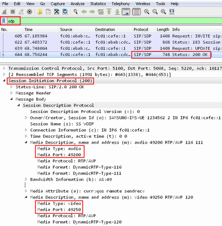
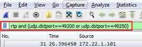
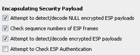

To record a PCAP file with the DAU, proceed as follows.
Start the DAU measurement application "IP Logging".
Transfer the media that you want to record:
Set up an audio or video call.
Transfer the media.
Terminate the call.
Tip: If you want to record mid call actions like codec change, upgrade or downgrade, set up a mobile-terminating call, not a mobile-originating call.
Stop logging.
The recorded PCAP file is stored on the samba share, in the directory ip_logging.
Open the recorded PCAP file with Wireshark.
Check the media ports for audio and video:
As filter, enter sdp.
If there are no SDP lines at all, see " Troubleshooting encryption settings".
Select the last line of the session setup, containing "200 OK".
In the lower part, check the SIP message body for media description entries.
In the following example, the port for audio is 49200 and for video it is 49250.

Filter the file for RTP packets to the audio and video ports:
Example for filter string: rtp and (udp.dstport==49200 or udp.dstport==49250)

If you have set up a mobile-to-mobile call, all messages appear twice: incoming from one DUT and outgoing to the other DUT. In that case you must enhance the filter string to remove the double messages.
For IPv4, you can check the "Time to live" of the messages. The double messages use different values. Filter one value via the string ip.ttl==<number>.
For IPv6, you can check the "Hop limit" of the messages. The double messages use different values. Filter one value via the string ipv6.hlim==<number>.
Save the filtered packets in a new PCAP file:
Click "File" menu > "Export Specified Packets".
Store the file on the samba share, in the directory ims/pcap.
Edit the XML meta file.
Add a <MediaConfig> element referencing the PCAP file. See "PCAP File Requirements and File Selection".
If you do not see any lines with the SDP protocol in Wireshark, but you see lines with the ESP protocol, you must change the Wireshark settings.
Configure the ESP settings, so that the encrypted messages are decrypted.
Access the ESP settings via the "Edit" menu > "Preferences" > "Protocols" > "ESP".
Enable the first three settings.

If your connection uses NULL encryption, these steps are sufficient. If your connection uses another encryption algorithm, you must provide the encryption keys to Wireshark, see "Configuring Wireshark for IPsec".